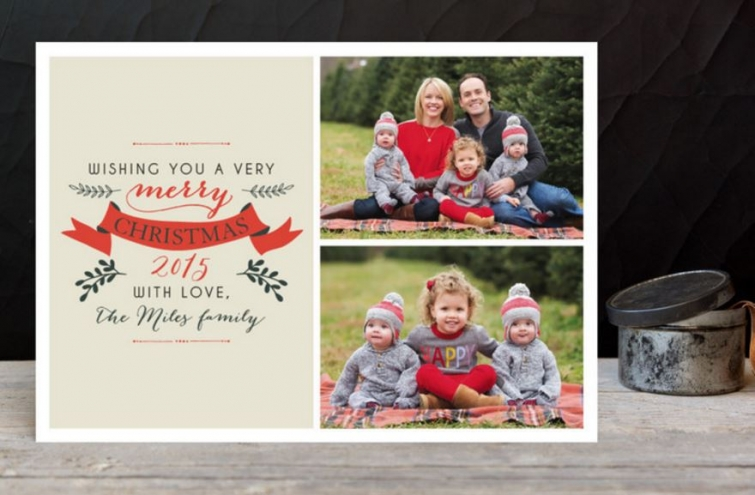
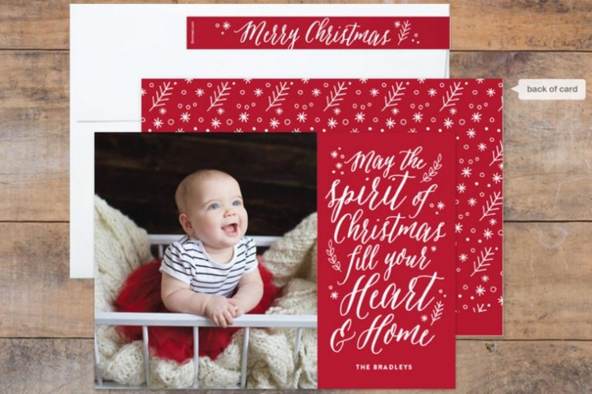

.png)
.PNG)
.PNG)
.PNG)
.PNG)
.PNG)
.JPG)
.JPG)
.PNG)
.PNG)


This post contains a sponsored giveaway and affiliate links. All opinions are mine.
We interrupt our Thanksgiving tour to bring you something wonderful to check off on your Christmas list.  I know.  I’ve repeatedly said No Christmas before Thanksgiving.  (I even fussed at our daughter yesterday when she said she was putting up her Christmas tree this week. 🙠)  And I have been a little stressed out seeing all these lists of things to do NOW for Christmas out in blogland. (I don’t even have my shopping list for Thanksgiving made yet!) Well I am eating my words today.  This is something you really need to do before Thanksgiving.
You need to….
Choose your Christmas cards.
source
It makes sense.  You’ll have them in time to get them addressed and mailed before Christmas.  But I have an even better reason that I want to share with you today.
Do you know Minted? Â It is a group of individual artists and designers from around the world. Â The company was founded in 2007. Â They began with stationery but have expanded to include home goods, art, and gift ware. Â If you are a lover of pretty paper like I am, you will love Minted.
source
Now if you have been around here for any length of time you know I don’t usually do sponsored posts. Â I have done numerous giveaways with my own money, but there have only been 2 sponsored posts in the 3 1/2 years I have been blogging. Â I’m very picky, and even though I am bombarded with every kind of company wanting me to promote their product, I usually say no thank you. Â You deserve more than posts that are merely advertising.
A few weeks ago, I received an email from Minted. I was sooo excited they were contacting me because I feel they are a reputable company with products that I really like.  Well…this division of Minted was their art line.  They were offering me art and a giveaway for you. I really wanted to do it, but you know…. there is not one piece of purchased art on any wall in this house.  All of our art is black and white photography…photographs we have taken. So…
I turned them down.
Not only am I picky, I also want to be true to me…and true to you. Â As beautiful as their artwork was, I didn’t want to do that giveaway and the sponsored post just to get free art (that I had no place for in our home.) Â Sorry if you are needing artwork…I’ve seen the giveaway on several other blogs out there.
Because I really wanted to work with Minted, I asked if they would instead consider sponsoring our Christmas cards and doing a giveaway for you.  (I have always adored their stationery!) And lo and behold they said they would love to! 🙂  So I began looking on their site at all the many many choices of cards.  You can do cards with or without photos.  You can choose your paper. You can choose how you want them printed – even adding foil to many of them. You can change the messages on most of the cards, and you can choose what you want on the back.  They will even address them for you!
You know I am a lover of lettering, so I fell in love with this one because it looks hand-lettered. Â Isn’t it pretty?!
I also liked the ones that have the look of a chalkboard.

You can pick from a variety of shapes for your cards.
How about sending an ornament shaped card (complete with ribbon for hanging!)
You can choose whether you want a flat card, a folded card, a booklet…
or a minibook!
Even their simple ones are gorgeous to me.
I wanted to do a photo card but knew I could not use the photograph of our children at the top of this post because it is 3 years old, and they do not look the same.  And because they are spread across the country from Washington state to Connecticut to Georgia, a group photo is not feasible right now.  So…I found this beautiful card and thought it would work with individual photos, and I could have all our big events from the year printed right on the front of it.  It was perfect (and red! 🙂 )
But do you know how hard it is to get our children to send us current photographs???  It is no problem with our daughter, but it is like torture for our sons.  So…I wrote back to Minted, explaining it all to them and said, Let’s not worry about my cards. Let’s just do the giveaway.Â
And here we are with a fabulous giveaway for you….and not just for one of you but rather for THREE of you!  They generously want to give three of you wonderful readers $100 towards your order for this year’s Christmas cards.  Now do you see why you need to be choosing your cards before Thanksgiving? 🙂
So how do you enter for your chance to win this giveaway? Â Because this one is sponsored, it is going to require one more step than we usually do.
To enter:
Step 1 – Click on this link to go to Minted’s giveaway site. It is only for readers of Talk of the House. Â Fill in your name and email address. Â They need that for the random drawing, to notify the winners, and to email the winning $100 credits to. (Only 1 entry per individual and email address please.)
Step 2- Look around at their holiday cards.  Find one that you love….perhaps even your favorite.  🙂  Then come back to the blog here and leave a comment telling which card you like.  That’s it, and you’re entered.
The giveaway runs from 11/16/15 to midnight 11/22/15 Eastern time. Â Minted will do the random drawing after that and notify the winners.
So while you are looking around Minted’s site, I am going to as well.
I will be looking at their non-photo ones like these to purchase…
Perhaps this one will work for us this year…
if we personalize it with our gingerbread recipe. 🙂
(The post about making this gingerbread is here.)
Have fun shopping, and good luck in the drawing!
Until next time…
(when we will continue the Thanksgiving tour 🙂 )

p.s. Â My phone is still in the Dark Ages, but Minted would love it if you could follow them on Instagram.


.PNG)
I love the it’s a wonderful life card
I agree, the cards are absolutely gorgeous Kelly … I’ve never heard of this company “Mint” before, one of the many reasons I am thankful for you!! I love the “sparkling peace” with no photo … for all of the obvious reasons this year.
I like all of their cards. Merry Holiday is the style I will use this year.
I loved them all – so festive. The one that would look the best with my picture of
My cabin would be : ” In the Frosty Air…”. It would be perfect!
I prefer cards that have scripture on them. It helps remind me of the real reason of Christmas. I love the one you posted above that has the Isaiah verse.
So many fabulous choices! Think my favorite is the Christmas photo card which says WE WISH YOU A MERRY CHRISTMAS in the shape of a Christmas tree! Loved your Thanksgiving decorating tour and so looking forward to seeing your beautiful home all decked out for Christmas!
In the midst of the current events of the world, I like the
Peaceful Tree. Thank you and Happy Thanksgiving!
I like the Wonders of His Love. It was hard to pick because their selection is so good! Happy Thanksgiving, Linda
What a selection! I think Elegant Ornament, really liked the Simplicity. For my wilder side, I thought the Botanical was awesome!
I would choose the card titled “A year in my life”. I also have children spread out all over the country and this card has multiple small photos instead of just one larger one. Great idea! Thanks for the fabulous giveaway!!
If I won the Minted contest, I think I would pick the Holiday Flowers postcard. Thank you for the chance to win!
Minted is a great company….I have some of their fabric…..I love the Christmas Blessings Chalkboard card…and the Chalkboard botanicals area pretty wonderful too..Great giveaway!
I would choose the Elated for a New Years card…..they are so pretty!
I love the round ornament cards that come with a ribbon. So cute and different from what I have sent in the past. Thank you for the chance at the give away and the Thanksgiving inspiration.
Well….how lovely! Like you, I would probably opt for a regular card with no photo since my daughter is in Europe! I really like the Reindeer Love card and the Elegant Ornament. They are both nice. I’m off to llok at more though. Their cards area all so lovely.
Blessings, Vicky
Scripted Blessings speaks to me because this holiday season it is a miracle and a blessing to have my husband with us. He barely survived a serious illness this summer and seems to have escaped any complications as well. I truly believe our family has been blessed many times over throughout this experience.
I like “Pine Circle” and “Reindeer Love”…. and all the others! Thanks, Kelly, for this great giveaway.
There are so many pretty ones! I really like the Joy one and “It’s a Wonderful Life”. Thanks for entering me in the drawing!
I really like “Hoping Your Holidays are Joyful”!
I love Minted and I love the Retro Worded Tree cards!
Loving “so delightful!”
I agree too many great cards to pick from. My favorites are Complete tree and College shimmer script.
Beautiful selections! It’s a Wonderful Life and Botanicals were two I really liked.
I love Minted! The “Its a wonderful life” card is my favorite. I have the perfect picture of my two little boys to use with that design : )
Much Joy was my favorite because I see joy everyday.
Thanks for sponsoring the giveaway. I love one the simple elegance card and the wonders of his love card. Minted has beautiful cards, would love to win!
Love your blog too! 🙂
Annie
Love the Retro Worded Tree-Foiled in gold
Love the Retro Worded Tree-Foiled
Great find, thanks!
Thank you!!! Love the “Wishing you a Season of Peace”. So appropriate at this time in our world!!!
Christine MacLeod
I absolutely love these cards and thank you for bringing the site to us. I really love the one shown here (picking it even before I saw the end of your posting-ha) – “Ring in the holidays…..” but the “…renew your faith in God and mankind…”sealed the deal…Hope I win!!!!
I think the Nativity card is truly lovely. There are so many that are each little works of art!
I love their gold foil card that says Joy! 🙂
I loved the card titled Christmas.
Counting Our Blessings is my favorite. I’m sitting here this evening watching all the world news and counting my own blessings!
So excited! I LOVE Minted! My favorite is the Holiday Happenings!
Well, I’m hard pressed to pick a favorite…there are so many gorgeous cards on the Minted website. But, I do love “A Beautiful and Wonderful Life.”
Thanks for sharing the site with us!
best,
Mary
I love “Stylish and Merry”!
I have to new grandsons and the aglow card with the babies would be precious!!
Kelly, I love the “be merry”card. Thank you for a chance to win. I actually like it when you share the businesses you like. I look @ blogs like magazines written by people I know. Magazines are full of advertisements. I think you need to do some of this to make your blog a business. However, I do appreciate not seeing pop up ads in your text. Some of those pop up ads on some blogs are so distracting. You have a great blog and I so enjoyed. Your Thanksgiving tour.
DiAnne
So many beautiful cards! I really like Grateful, and Matthew 2:10.
Joyful Wreath is my fav!
So hard to choose but I love ” Jumping Reindeer” and “Woodstock”. Such a great company!
I love the chalkboard card look. SOOO many great ones to choose from though!
I couldn’t choose just one…I love heritage “be merry” and “it’s a wonderful life”… Thank you for putting this fun giveaway together!
This is awesome! I LOVED RUNNING INTO YOU TODAY 😊 I hope y’all have a fabulous Thanksgiving and all will be well with your parents.
I chose “peaceful tree.” I treasure Christmas cards. I always try to pick just the right one. When my children were small I would pick cards based on fun and merry themes. As they grew I was drawn to blessings and joy because of my pride and love for them. Three years ago my I lost my brother to suicide in December. Shortly after my mother passed away (from a broken heart.). Today the holidays are very different. I am now drawn to wishes of “peace”. It is a universally heartfelt wish that seems perfect in its simplicity.
A Little Christmas Whimsey is my choice!
Love the all in the Foil Pressed collections! “Heart Be Light” is my favorite though, thanks!
I love the filled with love option (http://www.minted.com/product/christmas-photo-cards/MIN-XY5-CHR/filled-with-love?ccId=622479&dcC=J&agI=0&org=photo)!
Thank you for sharing Minted with us! I will sure use them for my holiday cards this year. I love so many but “Rich with Joy” is a favorite! 🙂
Visited and my favorite design is Merry Holiday by Erin Deegan
I like the Merry Holiday design!
We’re still trying to decide what to do with Christmas cards this year, but I love this one! http://www.minted.com/product/foil-pressed-holiday-cards/MIN-XSF-HFS/splash
I loved the ornament cards, especially the Christmas Morning, in red!
Such a great choice …. Beautiful cards! I d chose Sure is Bright or Complete Tree.
If photos are hard to find!! …. Elegant Ornament is simple and classy!
Thank you for doing this Kelly and introducing Minted to those of us who haven’t heard of them.
Merry Little Lines , perfect for us! Thank you for this post.I love Minted !
Lovely cards. My favorite is the Rejoice & Give Thanks Christmas Card.
So many choices, Merry Scriptmas is beautiful!
Thank you for this give away!! All of the cards are so unique and beautiful, but I especially love the cards “For unto us a child is born” and “It’s a Wonderful Life. Minted is amazing!
My favorite card design is Merriest Greetings Holiday Photo Cards.
Minted has beautiful cards! This year I really like the cheer triangle design.
I love all their cards, they are so unique. I love the foil and the multi-photos since it is difficult for us to choose just one. I would say Joie Grid. Many thanks for the giveaway and for your great blog!
Stylish and Merry is a classic card that looks like it would work with a lot of pictures! Love Minted!
Dotted frame with foil dots in the color scheme shown . In fact I ordered these cards two weeks ago. This card was perfect for showcasing the family photo we managed to get in late September. The cards arrived in just a few days with the envelopes addressed . The same dots that are on the card are scattered across the envelope. Beautiful and a quality product. I could actually use some more cards so winning the giveaway would be great! Thank you for sponsoring this product giveaway!
Dotted frame with foil dots in the color scheme shown . In fact I ordered these cards two weeks ago. This card was perfect for showcasing the family photo we managed to get in late September. The cards arrived in just a few days with the envelopes addressed . The same dots that are on the card are scattered across the envelope. Beautiful and a quality product. I could actually use some more cards so winning the giveaway would be great!
Love all of them– such wonderful quality I can tell!! What beautiful designs. I really like the colors on the Snow Fancy Holiday Petite Card! What a cute idea too for a unique size!!!
I like pine circle or sophisticated snow, my husband would probably like one with pictures! Like you, our children are scattered, so the choice is open to debate…
I like the Complete Tree Foil-Pressed Holiday Cards with family pictures.
It’s a wonderful life!
Thanks for the giveaway! So many to love but I am drawn to the simple designs like “Stylish and Merry.”
I love Christmas Glow
I love the textured pine postcards. Thanks!
All the cards are so amazing…. it’s hard to choose. “Grateful” was my final choice. I loved the script “Counting Our Blessings” because despite a year with struggles we have soooo much to be thankful for!
I like Smart Joy
Thanks for such a great giveaway, Kelly…I never knew much about Minted and I’m glad you gave us a little history to set it apart from other online sources for cards and stationery. I hesitate to do sponsored giveaways as well, so I know this must be a ‘close to your heart’ sort of event for you.
Love the website, I especially love Leah’s card, the black and white photo of the couple on the little boat—I’m a big nature lover. I want to do a holiday card with my two precious dogs (the kids are a little bit grown and unwilling candidates!) and I want it to be natural and sweet!
Thanks again!
Jane x
SO many wonderful ones! I really like the photo ornaments and the Christmas Ribbon one with scalloped edges. Even if I don’t win, I’ll use this site for my cards!
Book of Isaiah is my favorite!
So hard to choose as they are all so beautiful. Scripted Blessing would be my choice. We just had a new granddaughter last week and yesterday our oldest so got engaged. So many blessing have been given to us.
Thanks for the give away. So much fun!
my faves are Luke 2 and season’s favorites! minted has the prettiest cards!!
I really like the retro worded tree. That’s for the post.
I like Pine Circle Holiday card.
Alas, we don’t have a family photo suitable to make a card, so one of the many non-photo cards is what I need. There are too many to narrow it down, but in light of the current news, I would choose one that contained a prayer for peace.
I love the Sparkling Be Merry! It’s a card and an ornament so cute!
I like this one: http://www.minted.com/product/holiday-photo-cards/MIN-BV2-HYC/color-field
I absolutely love the Golden Love & Joy Holiday Photo Cards! Minted has the most unique, one of a kind designs, it’s so hard to choose just one!
I love so many! But I guess I would choose Frame of Joy for the photo I have in mind. Thank you for this opportunity. Minted cards are beautiful!
Sherry
Such great choices! I pick “A Beautiful & Wonderful Life”. Thank you for sponsoring such a fun contest!
The “merry and bright” card is my favorite!!
Wow,so many beautiful choices! Sadly, my family rarely wants to cooperate for a nice family photo. So I would probably have to choose a non-photo design. I really like Botanical in black….very traditional looking. There are so many with beautiful script designs.
Thanks Kelly!
I like the simple Merry Christmas cards, “Classically Scripted Christmas” or “Simple Elegance”
The ornament cards are fantastic!
I love the ornament card. I do that with all the Christmas cards we get every year anyway. Punch a hole in the top and hang it on the tree.
I love the embellished card, thanks for the opportunity!
I love the O Holy Night card, it is beautiful!
Thank you for this awesome opportunity. It’says incredibly hard to choose from such beautiful cards, but I think Christmas Ribbons would work well for me.
What beautiful cards. After looking a while on the site, I really like the Garden Song card. I love the sentiment of peace on earth for this holiday season.
LOVE your blog! Also love the ornament card Holiday Cheer. Thanks to you and Minted for sponsoring this contest.
Wonders is a great sentiment and card.
So hard to choose, but the heart shaped one filled with photos is unique.
Merry Snowflakes is my favorite one. Thanks for this opportunity!
In the Pines and/or Pine Circle.
Lovely blog!
We are a “blended” family, religiously speaking, and we have numerous non-Christian friends to whom we want to send holiday greetings, so when I’ve sent holiday cards — and it has been a while — I’ve usually sent New Year’s cards. The added benefit of doing so was that it gave me an extra week or two to get the cards out! Not having chosen (or taken!) a card-worthy photo yet, I couldn’t settle on one card today; however, I do know that I’d want to go with a “Peace” theme this year. Recent events in the world just seem to call for a more subdued, less celebratory message. Consequently, I’m leaning toward the “Shine On Noel” if I can find an accommodating photo, or “Winter Birds” (with the wavy edges and the interior photo) if I can’t. Thanks for the giveaway opportunity and for the introduction to Minted! I hadn’t known about the company, and I do love their graphics and the options for card shapes.
Sooooo hard to choose but love the Holiday Happenings card. Thanks for the chance!
The ornament card is so cute!
”Twas the night before Christmas, and all were asleep except these two…..
Chalkboard photo card. So cute!
Hard to choose But I think More the Merrier is very nice.
Thank you for this opportunity of the giveaway. And thank you just as much for not filling your space with ads. So appreciate your integrity. I had two favorites, pine circle and elegant ornament. Their work looks stunning! Thank you again.
Love the postage stamp one….lots of really cute ideas!! It was hard to chose just one.
It’s hard to choose a favorite. I kept looking at all the cute photos! I really like Christmas Blessings though. 🙂 Had to laugh at your “dark ages” comment because mine is too!! That is just the way I like it too!
I really like “Merriest Wishes” but there are so many great choices! Crossing my fingers that I win!
Thank you for a great giveaway! It’s so hard to choose one favorite, but my first reaction was I loved the Merry & Bright and the What a Year.
Thank you for the giveaway! I have use Minted for the last several years. I would love to have a $100 credit to go toward cards!! My favorite is one that has multiple photos.
Love the retro worded tree!
Thank you for this opportunity! It would be difficult to choose, but the one that really looks perfect for us this year is “splash” foil-pressed. Thanks again!
I really like Botanicals and Pine Circle-gorgeous cards!
I love the pine circle card with the greeting in “Merry Christmas”…thanks for sharing the site and chance to win!
Oh What Fun, would be great so I can include my grandchildren.
I LOVE the “Believe” postcard! I have the sweetest picture of my 5 year old and 1 year old sitting with Santa and Ms. Claus at the Biltmore House that I would use!
Kelly,
I think I like the Retro Worded Tree but I might even design my own with all of the options to choose from. I usually have our pictures taken and then design my own photo cards. Then I sign them, hand address them and stamp the envelopes. Using Minted would definitely speed the process up and reduce my work load though. They have many neat designs to choose from. Thanks for sharing.
Dawn
I like the Recipe Holiday Recipe cards. It was a tough decision. Thank you for the contest!
Bright and Free
Doesn’t that say it all?
What is most important – FREE
and Bright (bling of Christmas).
Beach and the family!
Kelly, Thanks for introducing us to a new, to me, company.
APPRECIATE that you are not “going shopping” with your blog.
Many blogs make me feel like a “marketer” is invading my personal space.
YOU are the best! Waiting for your next post.
Nan, Odessa, DE
Love Minted and love “It’s a Wonderful Life”!
I chose christmas glow. The card needed to meet certain criteria: With our family of 6 it needed to be landscape, it is important to me that the card read “Merry Christmas” and I wanted the card to primarily be a photo of the family. It was disturbing though to see same sex couples represented in some of their samples:( Thank you!
what the whaaaaaaat. ugh! i was wanting holiday photo cards this year…..but all the non photo holiday cards are SO COOL TOO AND I DIDNT EVEN KNOW MINTED MADE THEM. D: the recipe one is seriously beautiful and genius and right up my alley because i love to bake. but! i think ill stick to my original plan since we did end up taking some family portraits and just say the ‘winter botanicals’ holiday card is my favorite !
I love the ornament card!
I like Complete Tree and use special photos from throughout the year. Hard to choose just one.
Hi Kelly-Like you I would pick a card without the family photo. Two boys in college, one attending in Europe equals no current photo. I had a hard time picking just one card, there were so many that ‘spoke’ to me. I saw one called ‘International Joy’ that I thought would be good for these troubled times we are in. Thats my pick..to send good tidings to everyone,everywhere. The happiest of holidays to you and yours Kelly.
Donna in Savannah
I liked Chistmas Blessing………………it says everything in one card. I love cards and I usually like blank cards because I like to write in them myself. But these are very special.
My favorite card is the Stamp Collection Holiday card.
i love the sophisticated snow card template!
Having just got married in October, I have to say I really like Merry and Married. It is super cute and perfect for us! Thanks Kelly, for accepting this offer.
Maybe the simple snapshots card? I also love retro worded tree card. I like pretty words. I’m still waiting to get our family photo proofs back from the photographer, so it’s hard to pick out Christmas cards without knowing what kind of picture we’ll have.
Like yours, my children are spread out too. Although I still have my three youngest at home, my olders are in Statesboro, Wilmington, NC, and Germany. So, I think I like the Simple Snapshots card, as it is more of a collage of single pic options.
Great giveaway! I wasn’t familiar with Minted, so thanks for the post telling about this company!
Take care and have a lovely week!
Amy O’Quinn
I like “Christmas Blessings” and I would use a recent photo of my two grandchildren. Thanks so much!
I like the ones you picked,especially the verses of our saviors birth, but i think I’d like the pine circle holiday card. I don’t know if I could get a great pic from everyone either and we even had a wedding this year! But i love the wreath on this card.
It’s a wonderful life. Thanks for the chance to win!
Not So Calm – Mostly Bright – love that one!
How fun and what a wonderful, creative website! Thanks, Kelly ~ have a wonderful week!
Kelly,
I have used Minted cards for a few years now. Its great working with them and I love their selection. I really like the card “We wish you a Merry Christmas” and about 10 others are in the running for the card we’ll actually select this year.
Thank you for hosting this event. I needed to get going on this ‘to do’ item.
xo,
Karen
Lovely! Thanks for the give away!
I love “Modern Rustic”! Thank you for your honesty. Such a fun giveaway!
They have so many beautiful cards to choose from but I would probably pick the “Jumping Reindeer,” that one jumped (no pun intended) out at me.
So much to choose from! I absolutely love the Spirit of Christmas card. The saying is perfect. I had picked that out months ago – now I just need a photo!!! Wonderful giveaway!
As much as i absolutely love all the kid pictures and happy family pics….I feel your pain…so very hard to get all my family in a picture in a timely fashion!!!
Therefore, the Santa face with the scalloped beard would be my favorite. My second choice would be Deck the Halls.
My favorite is SO MERRY. Our oldest son got married this year, so our card will be a celebration of the Savior’s birth and the blessing of a new daughter to our family! Thanks, Kelly, for ALWAYS bringing beauty to your blog! Grateful….
I liked the chalkboard Religious Card that said “Believe.” That’s my life quote!!!
It’s a wonderful life
Botanicals! But what a tough decision… Thanks Kelly.
Minted’s stationary is of the upmost quality and they are all beautiful. The Holiday Pep design has caught my eye. Thanks Kelly…
So many beautiful cards and so many options! We do not have a family photo this year..so I’d go with the non-photo cards. I’d love to do something with a monogram! Thank you1
I love the holiday map cards – they have one for the U.S. east coast, west coast, even eastern and western Europe. Very cute!
Wow, 691 holiday cards on Minted! I like the vertical, folded cards, especially “Fir Frame” in red.
I love the Botanicals or Wonders of His Love ! I have never done these and would love to have the chance – Thank you!
I would choose “It’s a Wonderful Life!”
Wow! Hard to choose just one! If I have to choose it would be the “Modern and Rustic”. Thanks for sharing their website.
I like iIt’s A Wonderful Life. Thanks!
I like ‘The Magic of Holiday’. Thanks so much!
Hi Kelly, Thanks for the giveaway! I love so many of the cards but I think I’d pick Botanicals. Hope I win!!
Pine Circle amd Reindeer Love both appeal to my love of nature. Thank you for sharing this giveaway.
I love the non-photo collection. I would choose the pine circle style. Thank you and Minted for the chance to win.
Santa’s Beard caught my eye. Thank you for this give away.
I like “Merry Christmas Happy Year.” There are several pretty ones on there!
great tidings of joy…and …it’s a wonderful life!
So hard to choose just one…but I think that my favorite is the “love & laughter Christmas photo cards”, Thank you for offering this!